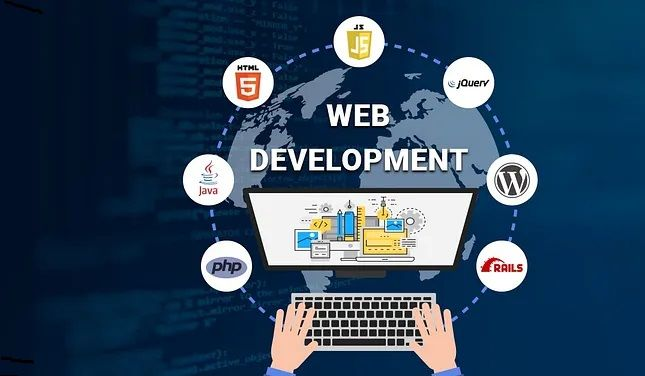
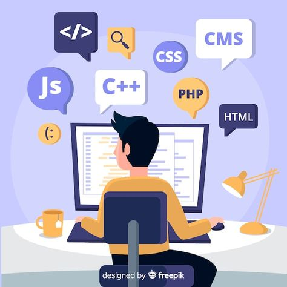
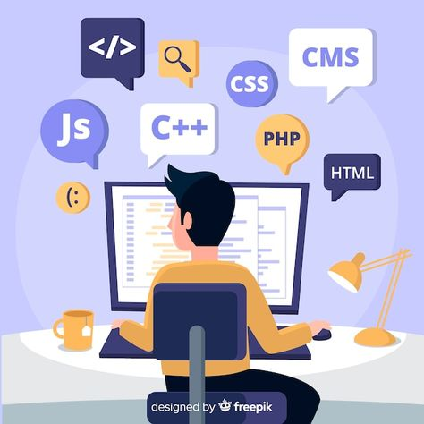

Web development typically refers to the coding and programming side of website production.When you learn web development, you might start out writing a simple page of HTML text and
build up to creating more complex, feature-rich applications designed to be accessed from variousInternet-connected devices. Examples of feature-rich web development include e-commerce websites,
content management systems (CMS), and social networks. Common programming languages and software webdevelopers may use include Hypertext Markup Language (HTML), Cascading Style Sheets (CSS), JavaScript,
PHP, Drupal, and MySQL.
Course Videos
HTML Tutorial for Beginners
JavaScript Tutorial for Beginners
CSS Tutorial for Beginners
SQL Tutorial for Beginners
Types of Web Development
They are different types of web development: front-end, back-end, and full-stack development.1 Note that web developers specialize in building websites, as opposed to mobile applications, video games, or software.
Front-end Development refers to the client- or user-facing side of websites. Front-end developers design and develop the visual aspects of a website, including the layout, navigation, graphics, and other aesthetics. Their main job is to build interfaces that help users reach their goals, so front-end developers are often involved in user experience (UX).
Back-end Development focuses on everything the user doesn’t see. Back-end developers work with servers, operating systems, application programming interfaces (APIs), and databases. They manage the code for security, content, and site architecture. They collaborate with front-end developers.
Full-stack Developmentencompasses both the front-end and back-end sides of a website or software program.2 Full-stack developers can create a website from start to finish. In addition to understanding HTML and CSS, these developers know how to program a browser, server, and database. They are skilled at working with the different technologies that handle different functionalities on a website, often requiring years of training and experience.
Web development curriculum
Aspiring professionals in this field can learn how to build websites entirely online,
through online coding boot camps, web developer certifications, or web development
courses online. From HTML tutorials to in-depth courses in responsive web design,
individuals can learn the latest client- and server-side coding practices. Web
development curriculum varies by level and by the particular course and subject,
but most intro classes will cover HTML and CSS basics along with popular web programming
languages like Python and JavaScript. There are also web development courses geared toward
back-end development that focus on databases, applications, and software.
Enroll in any of these introductory classes to learn web development and start building
websites in just a few short weeks.

Web Development Technologies
Web development utilizes a wide array of technologies. Some of the key ones include:
HTML (HyperText Markup Language): The foundation of web pages, used for structuring content.
CSS (Cascading Style Sheets): Used for styling the visual presentation of web pages.
JavaScript: A versatile scripting language used for adding interactivity and dynamic behavior to websites.
Frameworks and Libraries: Tools like React, Angular, Vue.js (for front-end), and Express.js, Django, Ruby on Rails (for back-end) simplify development.
Databases: Systems like MySQL, PostgreSQL, MongoDB, etc., for storing and managing website data.
Version Control: Tools like Git for tracking changes to code and collaborating with teams.
Discover web development jobs
From developing mobile interfaces to pushing the limits of modern web applications, companies are investing in and expanding their online presence. Job roles for web development professionals include:
Technology applications engineer
Web architect
Web design specialist
Web designer
Webmaster
What do web developers do?
Web developers create and maintain websites. They are also responsible for the technical aspects of a website, such as how fast it loads, how it performs, and how much traffic the site can handle. Web developers may also create content for a website.
A web development job description might include any or all of the following:
Meet with clients to discuss the needs, design, and functionality of a website.
Write code for the website, using programming languages such as HTML or JavaScript.
Create and test applications, interfaces, and navigation menus.
Work with web designers to determine the website’s layout.
Integrate graphics, audio, and video into the website.
Monitor website traffic.
Depending on the type of web development they do, developers may have additional job duties, such as working with databases and monitoring website security.
How to become a web developer
Educational requirements vary for web developers based on the employer, your particular role,
and other factors. Many professionals working as web developers hold a bachelor’s degree, with
some employers preferring to hire web developers who have specifically earned a bachelor’s degree
in computer or data science or programming. For professionals looking to advance to a senior role or
specialize in certain technologies, a master’s degree in data science may make them more competitive
in the job market. But web developers may not need specific education credentials if they can demonstrate
their abilities through prior work experience or projects.
For learners just starting out or professionals who want to expand their knowledge of specific skills, coding
boot camps, and online web development courses can help teach coding and other applicable tech skills.
 
